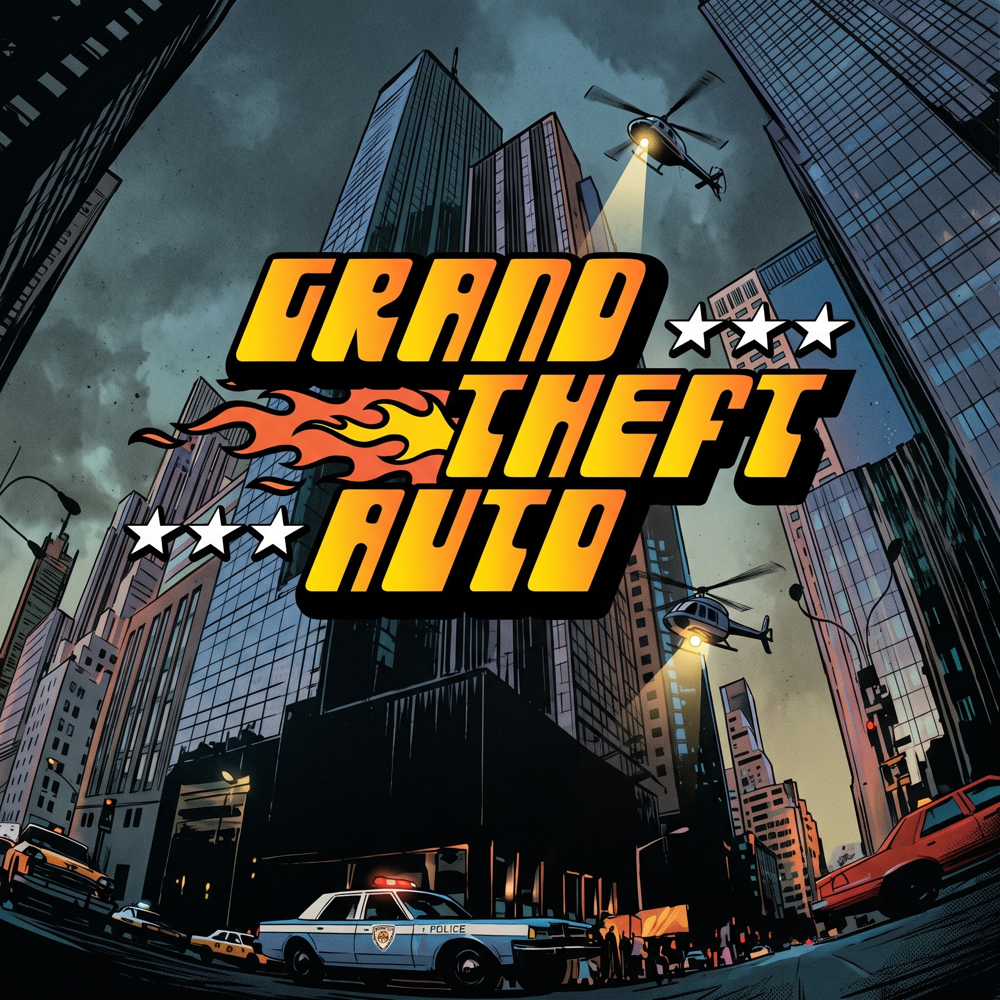

Catàleg de videojocs
GTA 1

Gèneres: Acció / Món Obert
Preu: 69.99 €
El joc que ho va començar tot. Experimenta el primer capítol de l'acció criminal en un món obert, on tu tries on anar i a qui robar.
GTA 2

Gèneres: Acció / Món Obert
Preu: 49.99 €
El respecte ho és tot. A Anywhere City, el crim està dividit en diverses bandes. Treballa per a elles, guanya el seu respecte i destrueix els teus enemics.
GTA III

Gèneres: Acció / Món Obert
Preu: 33.99 €
El crim sí que compensa. La saga de gran èxit i alta controvèrsia fa el salt a les 3 dimensions en el fosc i sòrdid submón de Liberty City. Amb la llibertat d'anar a qualsevol lloc i atracar a qualsevol persona.
GTA Vice City
Popular

Gèneres: Acció / Món Obert
Preu: 99.99 €
Benvingut als anys vuitanta. De la dècada de les grans cabelleres, l'excés i els vestits de tons pastís, arriba la història de l'ascens d'un home al cim de l'imperi criminal.
GTA San Andreas
Popular

Gèneres: Acció / Món Obert
Preu: 129.99 €
Fa cinc anys, en Carl Johnson va escapar de les pressions de Los Santos, San Andreas, una ciutat destrossada per les bandes, les drogues i la corrupció. Ara, a principis dels noranta, en CJ ha de tornar a casa.
GTA Advance

Gèneres: Acció / Món Obert
Preu: 4.00 €
Torna als carrers de Liberty City des d'una nova perspectiva. Centenars d'hores de joc amb tota l'acció clàssica de GTA dissenyada per a la consola portàtil.
GTA IV
Popular

Gèneres: Acció / Món Obert
Preu: 599.99 €
Què significa avui dia el somni americà? Per a en Niko Bellic, acabat d'arribar d'Europa en vaixell, és l'esperança de poder escapar del seu passat. Per al seu cosí, en Roman, és la visió que junts poden fer fortuna a Liberty City.
GTA Chinatown Wars

Gèneres: Acció / Món Obert
Preu: 1.99 €
Després de l'assassinat del seu pare, en Huang Lee té una missió molt senzilla: portar una espasa antiga al seu oncle Kenny per assegurar-se que la seva família conservi el control de les tríades de Liberty City.
GTA V

Gèneres: Acció / Món Obert
Preu: 1,999.99 €
Quan un jove estafador del carrer, un atracador de bancs retirat i un psicòpata aterridor es veuen involucrats amb el pitjor de l'inframon criminal, el govern dels EUA i la indústria de l'espectacle, hauran de dur a terme una sèrie de perillosos cops per sobreviure.
GTA VI
Popular Pròximament

Gèneres: Acció / Món Obert
Preu: 999,999.99 €